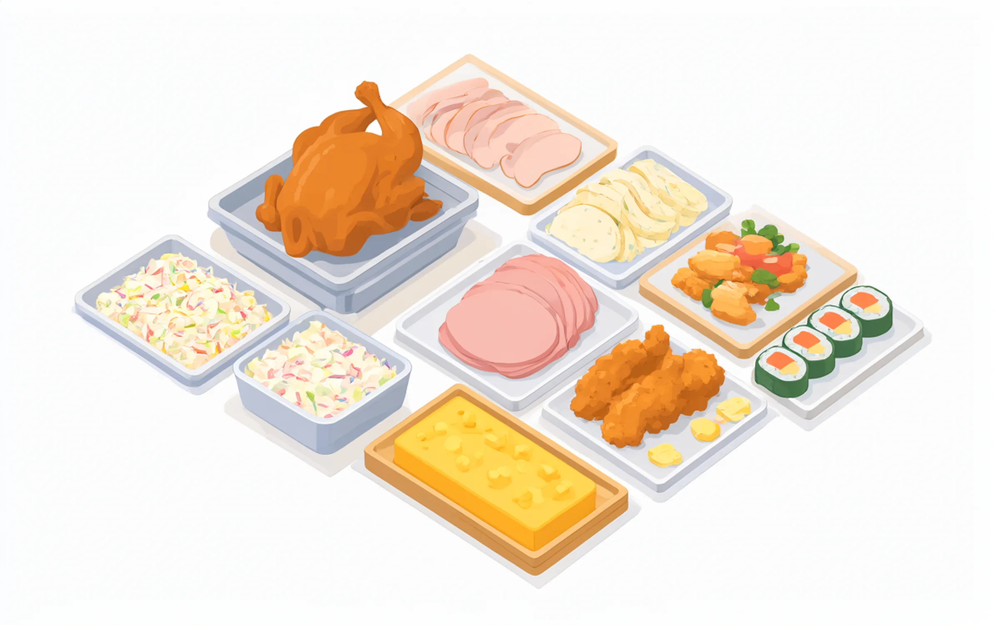
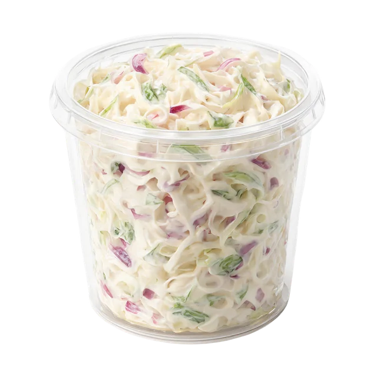
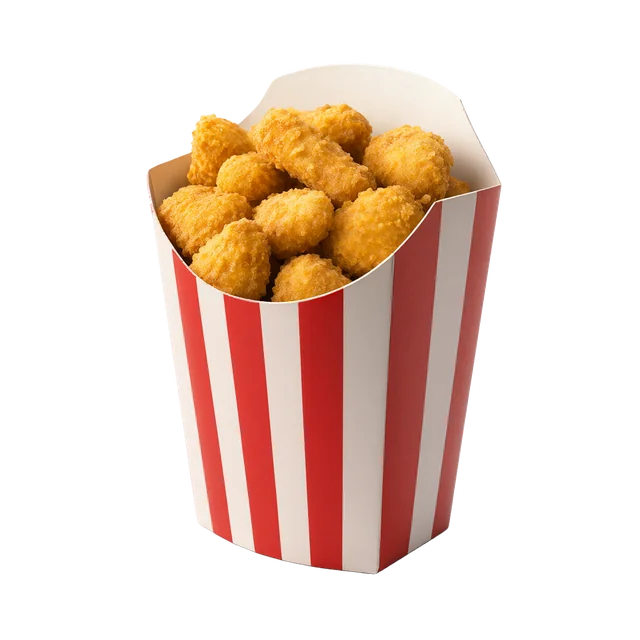

厨房
家居
服装
食物
身体部位
美妆与护肤
出行
Deli
熟食
场景
卡片
女声
男声

指到或点一下物品
再听一次
rotisserie chicken
sliced turkey
potato salad
coleslaw
sliced ham
fried chicken
mac and cheese
sushi
rotisserie chicken
烤鸡
sliced turkey
火鸡肉片
potato salad
土豆沙拉

coleslaw
凉拌卷心菜
sliced ham
火腿片

fried chicken
炸鸡
mac and cheese
芝士通心粉
sushi
寿司
‹ Breakfast 早餐
食物
Dips 蘸料 ›